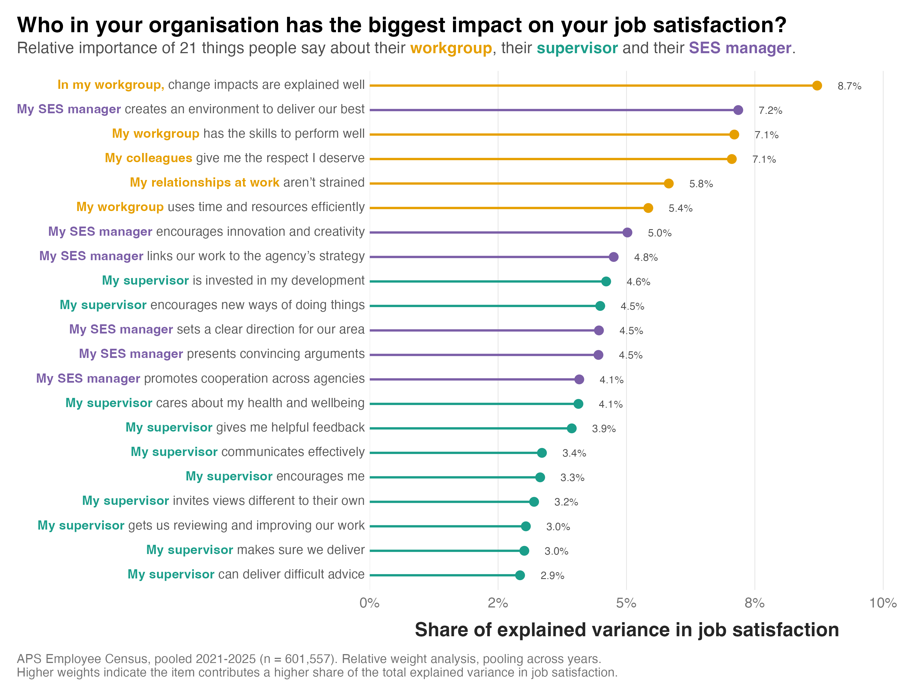

A common question I get when sharing my work on employee wellbeing is what role leadership and relationships with colleagues play. The HILDA data I often work with doesn't measure a whole lot on this topic. But the Australian Public Service Employee Census captures much more.
The graph below shows 21 APS Employee Census items relating to the influence of workgroups and colleagues, direct supervisors, and Senior Executive Service (SES) managers, which together explain 43% of the variance in job satisfaction. I used a relative weights analysis to rank the items by how much they contribute to that explained variance.

Here's what I found:
1) Averaging the items into a single score for each layer, the workgroup came out ahead (41.6% of the variance explained) of both the SES manager (29.7%) and the direct supervisor (28.7%).
2) The biggest single item relates to how well changes are explained within your workgroup, at 8.7 per cent. Workgroup items take five of the top six places.
3) The SES manager items generally have higher importance scores than the supervisor items, but this is partially due to the supervisor-related variance being spread across more items. But one senior leader item stands out. An SES manager creating an environment where people can deliver their best is worth 7.2 per cent, second overall.
All three are related to job satisfaction. But the people beside you matter more than either layer of management, and your direct supervisor doesn't come out ahead of an SES manager most staff would rarely deal with.
What I find most interesting is what the top workgroup items are actually about. Changes being explained well, the team having the skills to do the job, and time and resources being used efficiently have more to do with being well-informed or well-resourced than warmth or team bonding. Respect from colleagues (7.1 per cent) and relationships that aren't strained (5.8 per cent) matter too, but they don't outrank the practical items. These findings all speak to an organisation's need to balance leadership development with good job design, training, and communication practices.